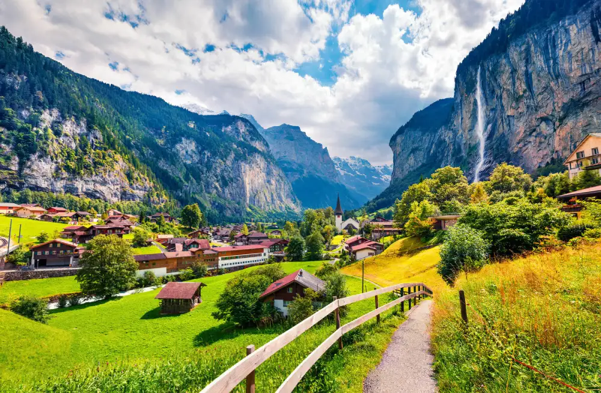
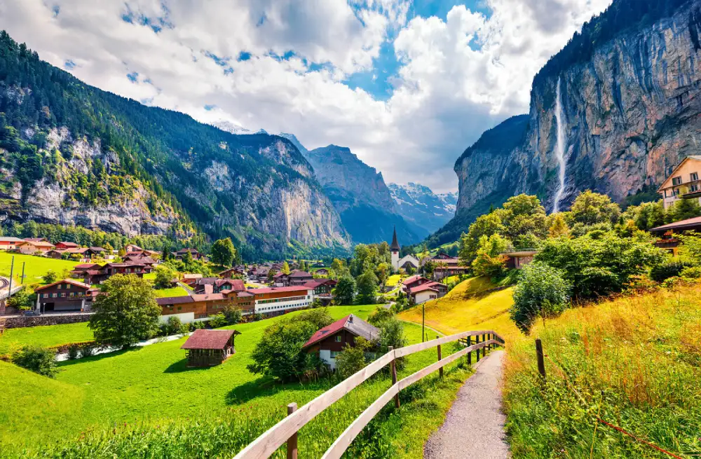

Background Information
Switzerland is a country in central Europe. It's small size equals approxemitetly to half of Scotland. Swtizerland officlally become a country on September 12th, 1848 The official languages of Switzerland are German, French, and Italian. Current population of Swtizerland is 8,921,981. Switzerland is known for their beautiful mountain landscape as well as for their foods. Switzerland is also known for their old historical architecture like the Chateau de Chillon and St. Peter's Cathedral. The country got legal independence in 1648 from the Holy Roman Empire.